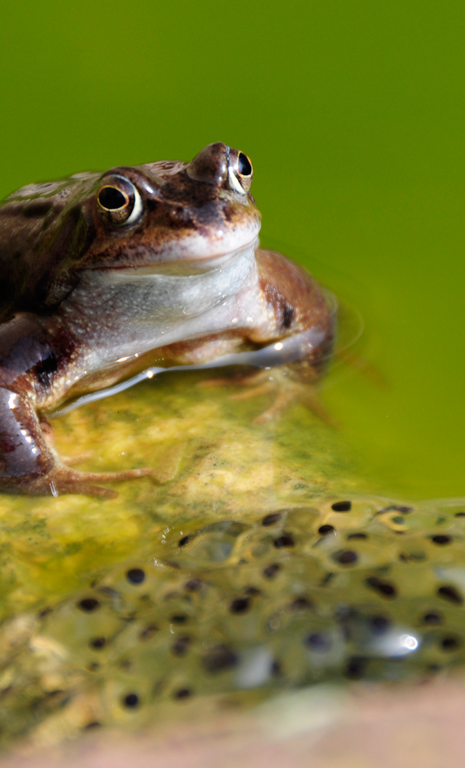
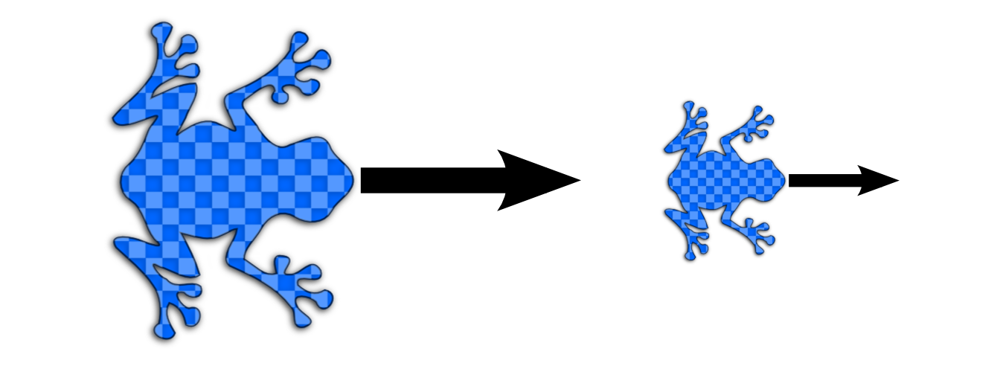
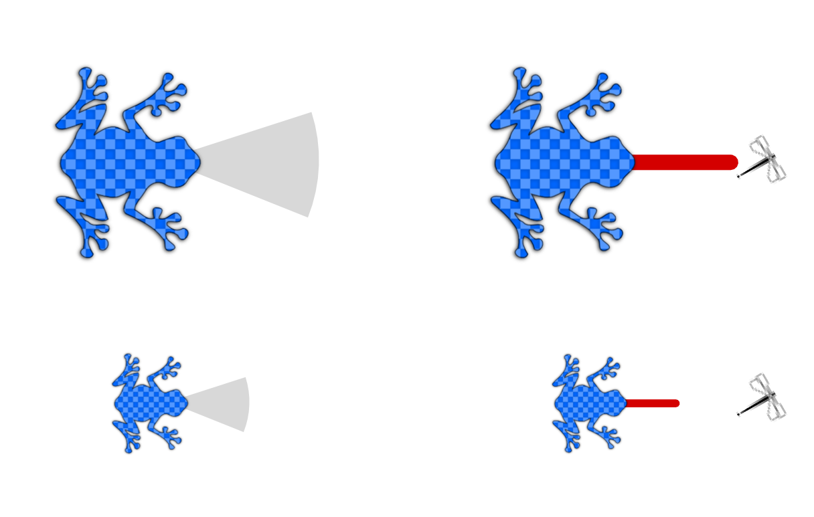

Photo by Whylogwhy (flickr). Some rights reserved.
Introduction
Have you ever stopped to wonder why there are so many different kinds of
living things on earth?
In North America alone there are over 300 different kinds of amphibians,
900 different kinds of birds, and over 3,000 different kinds of spiders.
When scientists look at fossils that lived millions of years ago, they
see that many living things looked much different than they do today.
How does this change happen?
In this unit we will explore these questions using a
computer model of frogs living in a pond habitat.

Photo by Anthony Masi (flickr). Some rights reserved.
With the computer model you will create simple programs to
control the behavior of little blue frogs. The only difference between
frogs is their size. Some frogs grow up to be slightly bigger or smaller
than their parents ... just like humans.
A frog's size affects some of the things it does.
Bigger frogs hop farther:

Bigger frogs can see farther and have longer tongues:

OK. Ready to get started? Click next to start working on your
first computer program.
Frog Sizes
Photo by Anthony Masi (flickr). Some rights reserved.
Credits
This app was produced at Northwestern University by the
Center for Connected Learning (CCL) and Computer-Based Modeling
(ccl.northwestern.edu) and the Tangible Interaction Design and
Learning (TIDAL) Lab (tidal.northwestern.edu). The code is based
on NetTango and NetLogo (ccl.northwestern.edu/netlogo).
Software: Michael Horn, Corey Brady, Arthur Hjorth,
Amartya Banerjee, and Uri Wilensky.
Model Design: Michael Horn, Amartya Banerjee, Corey Brady,
Arthur Hjorth, Aditi Wagh, and Uri Wilensky.
Graphic Design: Michael Horn
Title Page Photo: tom_harding (flickr). Some rights reserved.
This work was supported by the National Science Foundation under
grant DRL-1109834. Any opinions or recommendations are those of
the authors and not necessarily the views of the NSF.